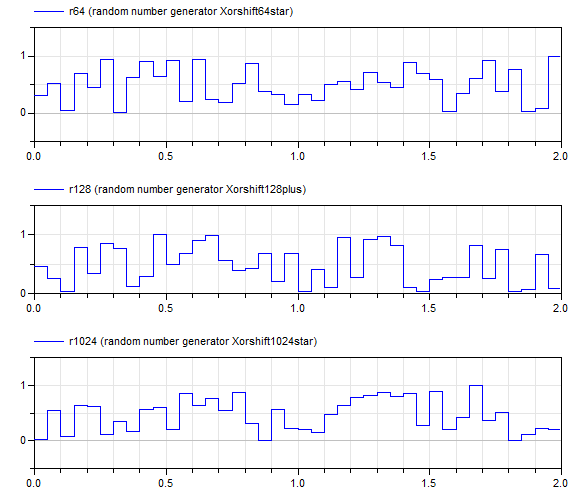

GenerateRandomNumbersGenerate random numbers with the various random number generators |
|
Information
This information is part of the Modelica Standard Library maintained by the Modelica Association.
This example demonstrates how to utilize the random number generators of package Math.Random.Generators in a Modelica model. The example calculates random numbers in the range 0 .. 1 of the available random number generators periodically with a sample period of 0.05 s. Simulations results are shown in the figure below:

Parameters (4)
| samplePeriod |
Value: 0.05 Type: Period (s) Description: Sample period for the generation of random numbers |
|---|---|
| globalSeed |
Value: 30020 Type: Integer Description: Global seed to initialize random number generator |
| localSeed |
Value: 614657 Type: Integer Description: Local seed to initialize random number generator |
| id |
Value: Utilities.initializeImpureRandom(globalSeed) Type: Integer Description: A unique number used to sort equations correctly |
Outputs (3)
| r64 |
Type: Real Description: Random number generated with Xorshift64star |
|---|---|
| r128 |
Type: Real Description: Random number generated with Xorshift128plus |
| r1024 |
Type: Real Description: Random number generated with Xorshift1024star |